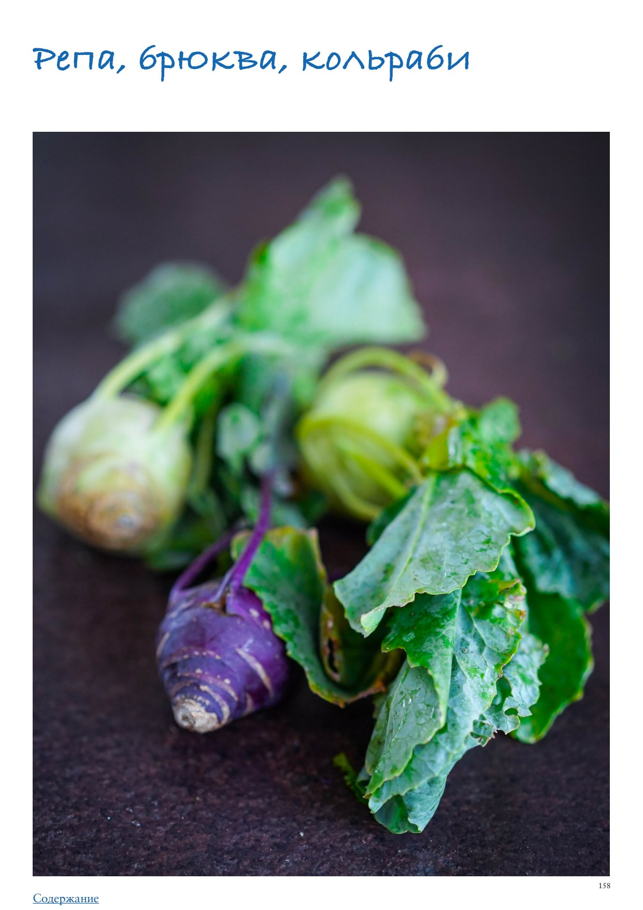

<!DOCTYPE html>
<html lang="en">
<head>
<meta charset="UTF-8">
<meta name="viewport" content="width=device-width, initial-scale=1.0">
<title>Репа, брюква, кольраби</title>
<style>
  * { box-sizing: border-box; margin: 0; padding: 0; }
  body { font-family: -apple-system, BlinkMacSystemFont, 'Segoe UI', Roboto, sans-serif;
         background: #faf7f4; color: #2d2926; max-width: 680px; margin: 0 auto; padding-bottom: 40px; }

  .photo-wrap img { width: 100%; max-height: 380px; object-fit: cover; object-position: center center; display: block; }

  .header { padding: 24px 24px 16px; }
  h1 { font-size: 26px; font-weight: 700; line-height: 1.2; margin-bottom: 10px; color: #1a1714; }
  .meta { font-size: 13px; color: #9a8a80; margin-bottom: 6px; }
  .rating { display: inline-block; background: #fff3e6; color: #c05f2a;
             font-size: 13px; font-weight: 600; padding: 3px 10px; border-radius: 20px; margin-bottom: 8px; }
  .source { font-size: 12px; color: #b0a09a; margin-top: 4px; }

  .info-bar { font-size: 13px; color: #5a4a3a; margin: 6px 0 4px; }

  .section { padding: 0 24px; margin-bottom: 24px; }
  .section-title { font-size: 15px; font-weight: 700; color: #7a4f2a;
                    text-transform: uppercase; letter-spacing: 0.6px;
                    margin-bottom: 12px; display: flex; align-items: center; gap: 8px; }
  .section-icon { font-size: 17px; }

  .subsection-title { font-size: 15px; font-weight: 700; color: #3a2a1a;
                       margin: 24px 0 10px; padding-bottom: 5px;
                       border-bottom: 2px solid #e8d5b8; }
  .ingr-subheader { font-size: 13px; font-weight: 700; text-transform: uppercase;
                     letter-spacing: 0.5px; color: #8a6a3a; margin: 14px 0 4px; }
  .ingr-list { list-style: none; display: flex; flex-direction: column; gap: 8px; }
  .ingr-list li { font-size: 15px; line-height: 1.5; padding: 8px 12px;
                   background: white; border-radius: 8px;
                   border-left: 3px solid #f0c080; }
  .qty { font-weight: 600; color: #c05f2a; }

  .steps { list-style: none; counter-reset: steps; display: flex; flex-direction: column; gap: 12px; }
  .steps li { font-size: 15px; line-height: 1.6; padding: 12px 14px 12px 48px;
               background: white; border-radius: 10px; position: relative; }
  .steps li::before { counter-increment: steps; content: counter(steps);
                       position: absolute; left: 12px; top: 12px;
                       width: 26px; height: 26px; background: #f0c080;
                       border-radius: 50%; display: flex; align-items: center;
                       justify-content: center; font-weight: 700; font-size: 13px; color: #7a4f2a; }

  .notes-list { list-style: disc; padding-left: 20px; margin: 0; }
  .notes-list li { font-size: 15px; line-height: 1.6; color: #2d2926; }

  .my-notes-section { margin-top: 8px; }
  .my-notes-box { background: #fffef5; border: 1.5px dashed #c8b870; border-radius: 12px;
                  padding: 14px 18px; font-size: 14px; line-height: 1.7; color: #5a4a30; }
  .my-notes-box p { margin-bottom: 6px; }
  .my-notes-box p:last-child { margin-bottom: 0; }
  .empty-note { color: #c0b090; font-style: italic; }

  .recipe-table { width: 100%; border-collapse: collapse; margin: 4px 0 12px; font-size: 14px; }
  .recipe-table th { background: #f5ede4; color: #7a4a28; padding: 8px 12px;
                      text-align: left; border: 1px solid #e0cfc0; font-weight: 700; }
  .recipe-table td { padding: 8px 12px; border: 1px solid #e8ddd5; vertical-align: top;
                      line-height: 1.5; }
  .recipe-table tr:nth-child(even) td { background: #fdf8f5; }

  p.para { font-size: 15px; line-height: 1.65; color: #2d2926; margin-bottom: 12px; }
  p.para:last-child { margin-bottom: 0; }

  .inline-photo { margin: 16px 0; border-radius: 10px; overflow: hidden; }
  .inline-photo img { width: 100%; max-height: 320px; object-fit: cover; object-position: center center; display: block; }
  .inline-photo.portrait { display: flex; flex-direction: column; align-items: center; background: transparent; }
  .inline-photo.portrait img { width: auto; max-width: 55%; max-height: none; object-fit: contain; border-radius: 10px; }
  .inline-photo.portrait figcaption { width: 55%; text-align: center; }
  .inline-photo figcaption { font-size: 12px; color: #9a8a80; padding: 6px 10px;
                               background: #f5f0eb; font-style: italic; }
  .inline-video { margin: 16px 0; border-radius: 10px; overflow: hidden; background: #000; }
  .inline-video video { width: 100%; max-height: 400px; display: block; }
  .inline-video figcaption { font-size: 12px; color: #9a8a80; padding: 6px 10px;
                               background: #f5f0eb; font-style: italic; }

  .related-section { font-size: 13px; margin-top: 8px; color: #9a8a80; }
  .related-label { font-weight: 600; color: #7a4f2a; }
  .related-link { color: #c05f2a; text-decoration: none; font-weight: 500; }
  .related-link:hover { text-decoration: underline; }

  .cooked-bar { font-size: 13px; margin-top: 10px; display: flex; flex-wrap: wrap; align-items: center; gap: 6px; }
  .cooked-label { font-weight: 600; color: #7a4f2a; }
  .cooked-chip { background: #f0ede6; color: #5a4a3a; padding: 3px 10px;
                  border-radius: 20px; font-size: 13px; border: 1px solid #d8cfc4; }

  .my-photo-wrap { margin: 24px 24px 0; border-radius: 12px; overflow: hidden;
                    border: 2px solid #e8d9c8; }
  .my-photo-label { background: #f5ede4; color: #7a4f2a; font-size: 12px; font-weight: 600;
                     padding: 6px 14px; letter-spacing: 0.4px; }
  .my-photo-wrap img { width: 100%; max-height: 420px; object-fit: cover;
                        object-position: center; display: block; }

  .back-btn { display: inline-flex; align-items: center; gap: 6px;
               margin: 28px 24px 20px;
               background: #c05f2a; color: white;
               font-size: 14px; font-weight: 600;
               padding: 8px 16px; border-radius: 20px;
               text-decoration: none; }
  .back-btn:hover { background: #a04e22; text-decoration: none; }

  @media (max-width: 480px) {
    h1 { font-size: 22px; }
    .steps li { padding-left: 42px; }
  }
</style>
</head>
<body>
  <a class="back-btn" href="../cookbook.html">← Catalog</a>
  <div class="photo-wrap"></div>
  <div class="header">
    
    <h1>Репа, брюква, кольраби</h1>
    <div class="meta">ПРАктика. Овощи</div>
    
    
    
    <div class="source">Source: ПРАктика. Овощи</div>
  </div>
  
  
        <div class="section">
          
          <p class="para">Репа, брюква, кольраби</p><p class="para">Кольраби, брюква и репа, что между ними общего? Оказывается, мало того, что они близкие родственники из семейства капустных, так еще и брюква — «ребенок» союза кольраби и репы, взявшая немного от «папы» и от «мамы», но очень похожая на обоих. Все три кругленькие, с хвостиками и пышной шевелюрой ботвы. «Фигуры» могут отличаться в зависимости от сорта, генов и диеты: потолще, поуже, высокие или коренастые. Ранние сорта всех трех овощей созревают в начале лета, поздние для зимнего хранения убирают до первых заморозков, в сентябре-октябре. Репа — обычно круглой, иногда приплюснутой формы, с тонкой кожурой желтого или светло￾оранжевого цвета и светлой желтой мякотью. Иногда встречается репа бледного, почти белого цвета, даже слегка зеленоватая, временами с оттенком сиреневого, в зависимости от сорта. Если внешний вид репы нам знаком с детства по картинкам из первых в жизни сказок, то на вкус ее пробовали далеко не все. Она давно перестала быть частым гостем на наших столах, хотя раньше являлась чуть ли не главным персонажем в русском рационе, особенно зимнем, так как хорошо хранится до весны (постепенно ее вытеснил более нейтральный, нежный и сладкий картофель). Брюква — зеленовато-серая или бурая, иногда с фиолетовым оттенком, снизу желтоватая или светло-салатовая. Сердцевина белая, кремовая или желтая. Бывает круглой, овальной, слегка приплюснутой или цилиндрической формы. На вкус мягче репы, а сладость зависит от сорта и содержания крахмала. Брюква — еще более редкий овощ, чем репа, многим она незнакома, некоторые даже считают, что это кормовое растение, а это совсем не так. В последнее десятилетие в Скандинавии, на волне движения за возрождение традиционных рецептов, даже самые именитые шеф-повара готовят брюкву разными способами. Кольраби — на вид как зеленая репа с «ушками», листья на тонких ножках растут со всех боков, по вкусу — капустная кочерыжка, сладкая, сочная, хрустящая. Светлая сочная мякоть, тонкая кожура зеленого или салатового цвета — это белая кольраби. Ту, что с кожурой фиолетово￾зеленого цвета, называют розовой. Кольраби появляется на рынках уже в конце лета, но основной сезон — осень. Как выбирать Ищите крепкие экземпляры репы, брюквы или кольраби, молодые, без внешних изъянов, трещин и помятостей. В случае с кольраби надо учитывать размер: до 7–8 см в диаметре, более крупная становится жесткой. Как хранить Хранить эти овощи нужно в холоде. Раньше использовали погреб, сейчас подойдет холодильная камера с ящиком для овощей. Ботву лучше обрезать перед длительным хранением, ее можно использовать в салатах или в качестве начинки для пирогов, у репы она обладает выраженной горчичной ноткой. Как чистить и нарезать Репу и брюкву легко чистить ножом или овощечисткой, срезав хвостик и ботву. Для приготовления нарезать брусочками или ломтиками. Для салатов можно натереть на крупной терке или терке для морковки по-корейски. Молодую кольраби с тонкой кожицей можно просто тщательно вымыть и не очищать. У экземпляров постарше и с более грубой кожицей срезать овощечисткой или ножом верхний слой с неровностями у основания стеблей.</p><p class="para">Лайфхаки</p><ul class="notes-list"><li>Репа — продукт, к которому относятся полярно: либо любят, либо вообще не понимают. Прежде чем приступить к кулинарным экспериментам с ней, стоит купить несколько на пробу и приготовить в сочетании с другими овощами, добавить в рагу или запечь с тыквой, острым перцем, чесноком, розмарином или тимьяном, посолить, поперчить и сбрызнуть оливковым маслом.</li><li>Очищенную и нарезанную ломтиками брюкву можно положить в ланчбокс вместе с другими овощами или вместо яблока в качестве перекуса.</li><li>Чтобы очищенная кольраби при хранении не потемнела, можно нарезать ее кубиками или ломтиками, добавить немного сока лимона или яблочного уксуса, щепотку соли, закрыть в контейнере и затем использовать в качестве закуски, сбрызнув оливковым маслом, или для приготовления салатов.</li><li>Ботву брюквы или кольраби можно скрутить в сигары, нашинковать тонкой лапшой и обжарить в оливковом или топленом масле, использовать как гарнир или в дополнение к основному гарниру, например, к картофельному пюре.</li><li>Ботву кольраби можно использовать в качестве начинки для пирогов. Как готовить Отличный вариант для брюквы и кольраби — французская закуска крудите. Свежие овощи нарезать брусочками и подать с крупной солью, оливковым маслом, соусом винегрет или дипом на основе сливочного сыра и/или йогурта с измельченным зубчиком чеснока. Можно дополнить крудите палочками свежего сельдерея, моркови, свежих огурцов, сладкого перца и т. п. Репу можно жарить, тушить с мясом и/или овощами: помидорами, сладким перцем, луком, морковкой, еще отличный вариант — с грибами и луком, а также варить, запекать, делать диетические чипсы. Брюква по вкусу нежнее репы и более крахмалистая. Готовить ее можно теми же способами, что и репу, добавлять в пюре и рагу. Брюкву отваривают на пару, запекают, обжаривают в масле ломтиками, брусочками или кубиками. Из репы и из брюквы можно приготовить пюре, текстура получится не такой однородной, как у картофельного, волокна и крупинки будут слегка ощущаться, зато оно получится менее калорийным. Консистенция напоминает пюре из корня сельдерея, но с менее ярким ароматом. Кольраби прекрасна свежей в салатах, причем вместе с ботвой. Как и любая капуста, она универсальна, подходит для овощных котлет, рагу, пюре. Сильный капустный аромат и вкус проявляется только у перезревших и крупных экземпляров кольраби, а молодая отличается нежностью, сочностью и сладостью. В тертом виде ее можно добавлять в фарш, а также тушить (например, с грибами, луком, сметаной или сливками), жарить, запекать с другими овощами, готовить зеленый борщ, щи и другие супы. С кольраби получаются отличные оладьи и омлеты, можно приготовить из нее чипсы. Рецепты на каждый день</li></ul><ol class="steps"><li>Пареная репа. Все мы знаем, что нет ничего «проще пареной репы»: в чугунок с кусочками репы, можно и в сочетании с другими овощами (около 1,5 кг), добавить немного масла, полстакана воды и/или молока. Раньше чугунок ставили в печь на остывающие угли, оставляли томиться до полной мягкости и подавали с солью и маслом, а детям — с ложкой меда. При отсутствии печи или медленноварки можно приготовить репу при низкой температуре в духовке. Очистить, нарезать ломтиками, сложить в чугунный сотейник с крышкой или порционные горшочки, запекать 2 часа в разогретой до 120 °С духовке.</li><li>Пюре из репы или брюквы. Репу или брюкву (около 700 г) очистить, нарезать кусочками, отварить в подсоленной воде до мягкости 17–20 минут, слить воду, добавить 50 г сливочного масла, размять толкушкой, тонкой струйкой влить горячее молоко или сливки (около 150 мл), доведя пюре до нужной консистенции. *При варке можно добавить в воду зубчик чеснока для аромата, а затем его достать.</li><li>Фаршированная репа или брюква. Если срезать верхушку и выбрать мякоть, можно нафаршировать репу или брюкву мясом с овощами, фаршем с рисом, как на голубцы, затем запечь или потушить в томатном соусе. Фаршируют репу и сладкой начинкой из размоченного хлебного мякиша с топленым маслом, изюмом или другими сухофруктами или вялеными ягодами. Готовую репу со сладкой начинкой можно полить медом.</li><li>Запеканка из репы с яблоками и грушей под штрейзелем с ореховой крошкой. Нарезать тонкими ломтиками в равных пропорциях 800 г репы, яблок и груш, выложить в смазанную сливочным маслом форму, при желании добавить изюм или сладкие ягоды. Смешать 150 мл сливок с 1 яйцом, 50 г сахара и 1 ст. л. кукурузного крахмала, залить содержимое формы, посыпать штрейзельной крошкой (смешать в кухонном комбайне 50 г пшеничной муки с 50 г сливочного масла, 1 ст. л. сахара и 30 г орехов). Запекать в разогретой до 180 °С духовке около 45 минут, до золотистой корочки.</li><li>Цукаты из репы. Нарезать небольшими кубиками 700 г репы, добавить столько же сахара (если хотите менее сладкие цукаты, количество сахара можно сократить вдвое) и 100 мл воды, дополнить соком и цедрой 1 лимона, после закипания убавить огонь, варить 5 минут, снять с огня и оставить на сутки. Затем снова проварить 5 минут и полностью остудить. Еще раз повторить процедуру. После третьего раза извлечь шумовкой кубики репы из сиропа и дать подсохнуть на противне, выложенном бумагой для выпечки. Использовать в качестве перекуса или как добавку к сладкой каше. Салат со свежей репой на 4 порции 1 средняя репа 1 сладкий перец 1 авокадо 150 г помидоров черри 100 г салата романо 30 мл оливкового масла 1 ст. л. бальзамического уксуса 1 ч. л. сладкой зернистой горчицы соль, свежемолотый черный перец</li><li>Нарезать репу, сладкий перец и авокадо средними кубиками. Помидоры черри разрезать пополам. Салатные листья произвольно порвать или нарезать квадратами со стороной 3–4 см.</li><li>Смешать оливковое масло с уксусом и горчицей.</li><li>На салатные листья выложить овощи, посолить, поперчить, полить заправкой и перемешать.</li><li>Крем-суп из брюквы Для приготовления крем-супа лучше использовать овощной или куриный бульон, но можно и просто воду. Подавать его рекомендуем с зеленью, сухариками, посыпать тертым пармезаном или раскрошенной фетой, при желании добавить дробленые орешки, фундук или миндаль. на 4 порции 200–300 г картофеля 300 г брюквы 1 луковица 1–2 зубчика чеснока 40 г сливочного или топленого масла 500 мл овощного или куриного бульона 200 мл сливок щепотка тертого мускатного ореха соль, свежемолотый перец</li><li>Картофель и брюкву нарезать кубиками по 2 см, порубить лук и чеснок.</li><li>Кастрюлю с толстым дном поставить на средний огонь, разогреть, добавить масло, выложить лук и чеснок, пассеровать до полупрозрачности около 5 минут. Добавить картошку и брюкву, обжарить несколько минут, затем влить бульон, довести почти до кипения, убавить огонь и варить 20 минут.</li><li>С помощью погружного блендера измельчить суп до однородного состояния, влить сливки, посолить, поперчить, добавить мускатный орех. Прогреть на слабом огне в течение 5 минут.</li><li>Подавать суп горячим. Кольраби в кукурузной панировке Можно жарить запанированные ломтики кольраби не на сковородке, а во фритюре. Другой вариант: выложить на противень, сбрызнуть маслом, запечь в разогретой до 200 °С духовке в течение 15–20 минут, до золотистого цвета. Подавать можно с йогуртом, смешанным с измельченными чесноком и зеленью. на 4 порции 500 г кольраби 1 яйцо 150 г кукурузной муки 1/2 ч. л. соли 1/2 ч. л. сладкой паприки 1/2 ч. л. сушеного чеснока оливковое масло для жарки свежемолотый черный перец</li><li>Кольраби при необходимости очистить и нарезать ломтиками толщиной 5–7 мм.</li><li>Взболтать яйцо в широкой миске.</li><li>В отдельной широкой миске смешать кукурузную муку с солью, паприкой и сушеным чесноком, поперчить.</li><li>Обмакнуть ломтики кольраби в яйцо, затем в муку со специями.</li><li>Разогреть сковородку на среднем огне, влить масло. Жарить ломтики кольраби с двух сторон по 4 минуты, до золотистого цвета. Чтобы избавиться от излишков масла, выложить обжаренные ломтики на бумажные полотенца.</li><li>Сочетание репы, брюквы и кольраби с другими продуктами Репа сочетается с беконом, грибами, сливками, мясом (свинина, баранина, говядина), сыром, орехами и другими корневыми овощами (картофель, морковь, сельдерей, пастернак), тыквой, кабачками, соусом бешамель. Брюква сочетается с беконом, жирным мясом (свинина, баранина, говядина), сыром, орехами и другими корневыми овощами (картофель, морковь, сельдерей, пастернак), перцем, помидорами, сливками. Кольраби сочетается с фруктами (яблоки, груши), корневыми овощами, помидорами, сладким и острым перцем, беконом, мясом (свинина, говядина, баранина), курицей, сыром, орехами (особенно арахисом) и семечками, зеленью, луком, чесноком, яйцами, кукурузой, тимьяном, розмарином, мускатным орехом. Что еще можно приготовить с репой, брюквой и кольраби</li></ol><ul class="notes-list"><li>Салат с репой, апельсинами и шпинатом</li><li>Репа, маринованная со свеклой (в пропорции 1:1) и чесноком</li><li>Сливочный суп с репой, картофелем и цветной капустой</li><li>Овощной суп с брюквой, сладким перцем и брюссельской капустой</li><li>Суп-пюре из репы или брюквы с фетой и крошкой обжаренного арахиса</li><li>Зеленые щи с кольраби</li><li>Омлет с кольраби, острым перцем, беконом и луком</li><li>Пюре из картофеля и кольраби</li><li>Гратен из репы и картофеля с сыром и соусом бешамель</li><li>Запеченная ломтиками репа с розмарином и чесноком</li><li>Брюква, фаршированная овощами, грибами или мясом</li><li>Гратен из брюквы с голландским соусом, чесноком, тимьяном и сыром</li><li>Пастуший пирог с брюквой и картофелем</li><li>Чечевица с луком-пореем, брюквой и грибами</li><li>Жаренная ломтиками кольраби с шалфеем и чесноком</li><li>Пирог с томленой кольраби с зеленым луком и вареными яйцами</li></ul>
        </div>
</body>
</html>